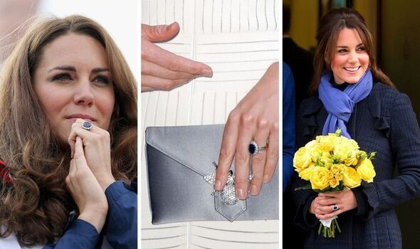
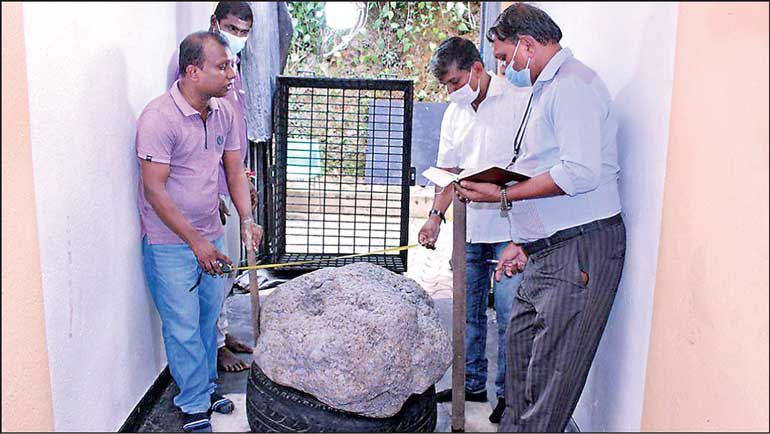
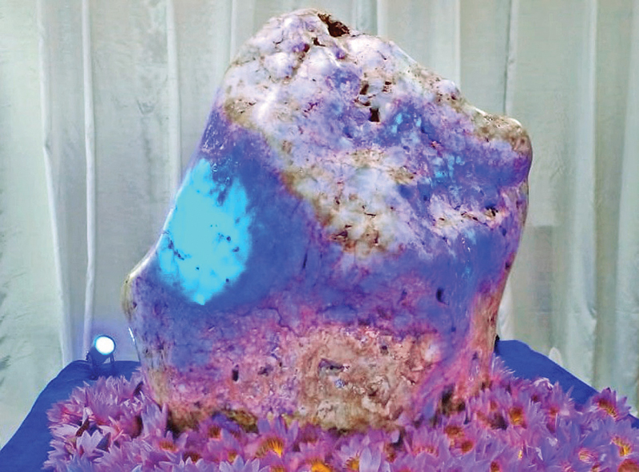
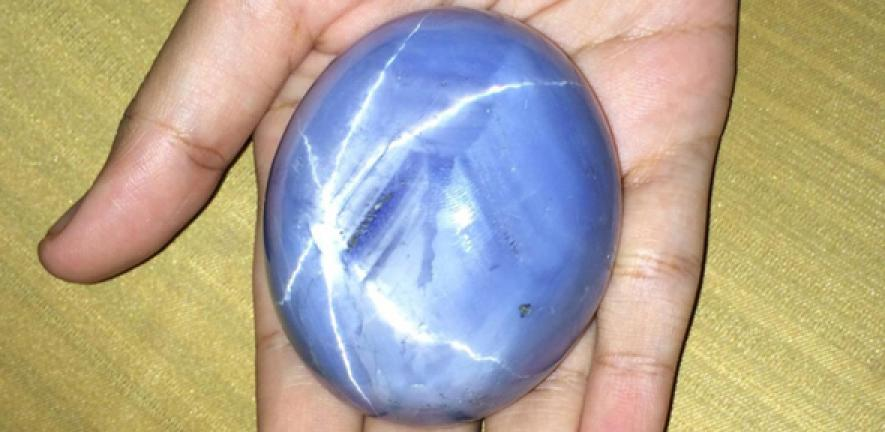
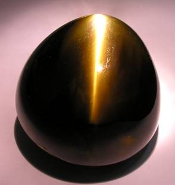

I. Engagement ring of Princess Diana
The gems of Sri Lanka are woven into its history. Marco Polo wrote that the island had the best Sapphires, Topazes, Amethysts, and other gemstones in the world. Records from sailors that visited the island states that they brought back ‘Jewels of Serendib’. Serendib was the ancient name given to the island by Middle Eastern and Persian traders that crossed the Indian Ocean to trade gemstones from Sri Lanka to the East during the 4th and 5th century. King Solomon was said to have procured a great Ruby for the Queen of Sheba from Ceylon. In more recent times, the Sri Lankan Blue Sapphire glows in the universe due to the Royal Marriage of the Century. This glamorous Ceylon Blue Sapphire and Diamond Cluster is the engagement ring of the striking and admirable couple Prince William and Kate Middleton which was originally the engagement ring of the late Princess Diana.
II. The Serendipity Sapphire
The Serendipity Sapphire, which was discovered in Kahawatte in the Ratnapura District of Sri Lanka in July 2021, is the largest cluster of star sapphire in the world. It weighs a staggering 510 kilograms or 2,600,000 carats and has an estimated value of up to US$100 million. The dimensions of the cluster are 100 centimetres in length, 72 centimetres in width, and 50 centimetres in height.
III. The Queen of Asia
The largest natural corundum blue sapphire in the world is known as the Queen of Asia. This precious gemstone has a weight of 310 kilograms, which is equivalent to 1,600,000 carats. The Queen of Asia was discovered in Batugedara, located in the Ratnapura district. Its existence was revealed to the public in December of 2021.
IV. The Star of Adam

The Star of Adam is a blue star sapphire that has an oval shape and is
currently recognized as the largest star sapphire in the world. It has a
weight of 1,404.49 carats, which is equivalent to 280.898 grams or
9.9084 ounces. The gemstone was discovered in 2015 and surpassed the
Black Star of Queensland, which weighed 733 carats, as the largest star
sapphire in the world.
The gemstone that is blue in color has a unique mark or reflection in
the center that is shaped like a six-pointed star. This particular
gemstone, which is known as "The Star of Adam," was discovered in August
2015 in Ratnapura, a city in southern Sri Lanka that is famous for its
abundance of precious gems. The current owner of the gemstone gave it
this name as a reference to the belief held by Muslims that Adam, the
first man, arrived in Sri Lanka and lived on Adam's Peak after being
expelled from the Garden of Eden.
V. The Eye of the Lion
The Chrysoberyl cat's eye is an exquisite gemstone that weighs a staggering 465 carats. It was discovered in the late 1800s in the Pelmadulla paddy field, located in the Rathnapura district of Sri Lanka. Originally, it belonged to a family that descended from King Rajasinghe the first, who ruled Sri Lanka from 1581 to 1593. This remarkable gemstone is found in the paddy fields owned by Iddamalgoda Kumarihamy, an aristocratic chieftain in the Sabaragamuwa Province and Chief Custodian of Saman Devale, a temple that has been serving the region for over 750 years.